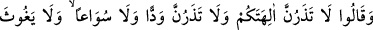
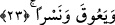

Âyette yer alan “kübbâr” kelimesi, şeddesiz olarak “kübâr” okunmuştur; ancak
birinci okunuş tarzı daha beliğ, mânâ îtibâriyle daha güçlüdür, o da “el-kebir”den daha
beliğdir. Tıpkı tuvvâl, tuvâl ve tavîl kelimeleri gibi.
Onların “büyük hile ve desiseleri”nden kasıd, insanları dinden engelleme hususunda
tuzak kurmaları, Hz. Nûh (a.s.)’a eziyet etmeleri için kandırmalarıdır.
İbn Şeyh der ki: Mertebeler içinde tevhid mertebesi en büyüğü olunca, onu engelleme
ve şirki emretme günahı da günahların en büyüğü olmuştur. Bu sebeple Allah Teâla onu
büyük hile ve desise olarak vasfetmiştir.
23. Ve dediler ki: Sakın ilâhlarınızı bırakmayın; hele Ved, Suvâ, Yeğûs, Ye’ûk ve
Nesr’den asla vazgeçmeyin!
O liderler, önderler kendilerine tâbi olanlara ve düşük seviyedeki kimselere “sakın
ilâhlarınızı bırakmayın” yâni onlara ibâdeti kesinlikle bırakmayın. Nûh’un Rabbine
ibâdet etmeye kalkmayın “hele Ved, Suva, Yeğus, Ye’ûk ve Nesr’den asla vazgeçmeyin
dediler!”
Hile ve desise kurdular anlamına gelen “mekeru” fiilini yirmibirinci âyette yer alan
“uydular” fiiline atfeden âlimlere göre bu âyette yer alan “dediler” fiilinin anlamı
onların bâzısı bâzısına dedi şeklindedir. Yâni herkes birbirine böyle diyordu.
Bu son âyette sıralanan put isimlerinden son ikisinin başında -yeuk ve nesr- nefy harfi
olan “lâ” harfi bulunmuyor, çünkü yapılan tekid nihâyetine ermiş ve maksadın tek tek
her biri olduğu, toplu olarak umûmu kasdedilmediği anlaşılmış oldu. Buna göre mânâ:
“Siz bilhassa bu putlara ibâdeti bırakmayın” demektir. Bu ifâde hassın âmma atfı
kabilindendir. “İlâhlarınız” ifâdesine bunlar da dâhil olduğu hâlde husûsî olarak tekrar
zikredilmişlerdir. Çünkü burada onların en büyük putları idi. Bu putlar onlardan aynen
Araplara intikal etmiştir. “Ved”, Dûmetü’l-Cendel’deki Kelp kabilesinin putunun adı
idi, bu sebeple Araplar Kelp kabilesine “Abdü Ved” demişlerdir.
Râğıb’ın ifâdesine göre ved bir put olup bu ismi ya ona tapanların kendisine sevgi
beslemelerinden ya da kendisiyle Allah Teâla arasında bir sevgi bağı olduğuna
inanmalarından dolayıydı.
Süvâ, Yemen’deki Hemdan kabilesinin putu idi.
Yeğûs, Mezhıc kabilesinin putu idi. Bu sebeple araplar mezhiclilere abdi yeğus
derlerdi.
Yeûk; Murâd kabilesinin, putu idi. Murâd, kabilenin babası idi, kabilenin babasına
murâd denmesi onun temerrüd etmesinden; yâni başkaldırmasından dolayı idi.
Nesr, Himyerlilerin putu idi. Himyer, Yemen’deki Sanâ’nın batısında bir yerin